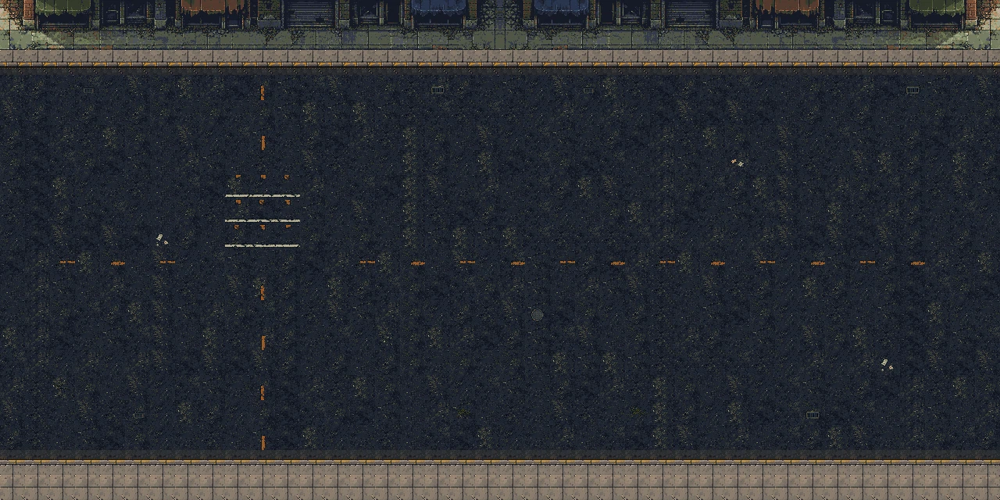
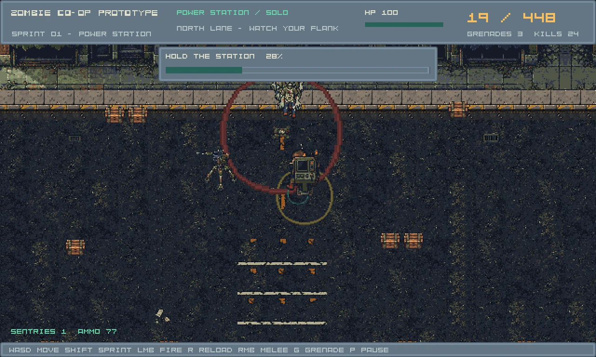
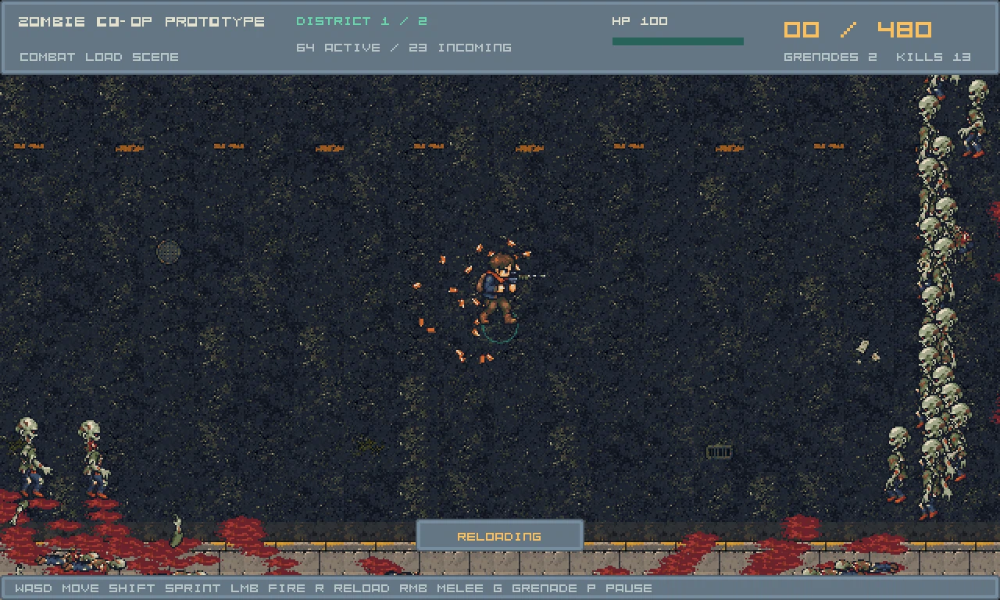
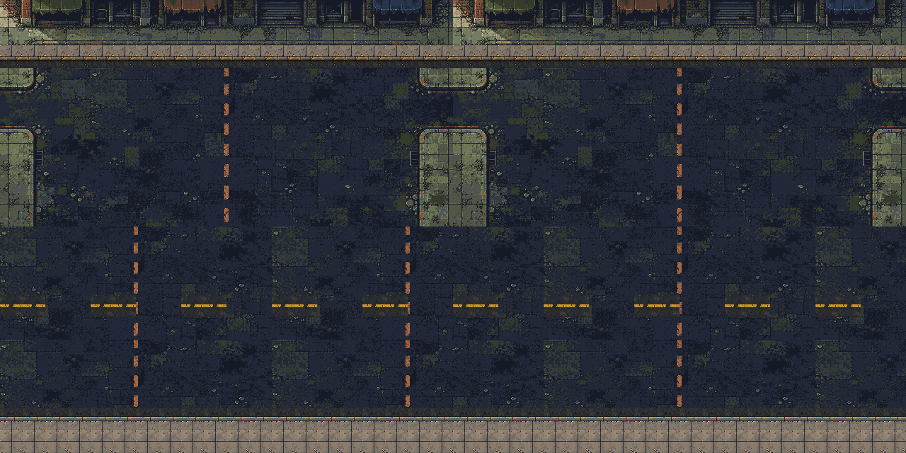
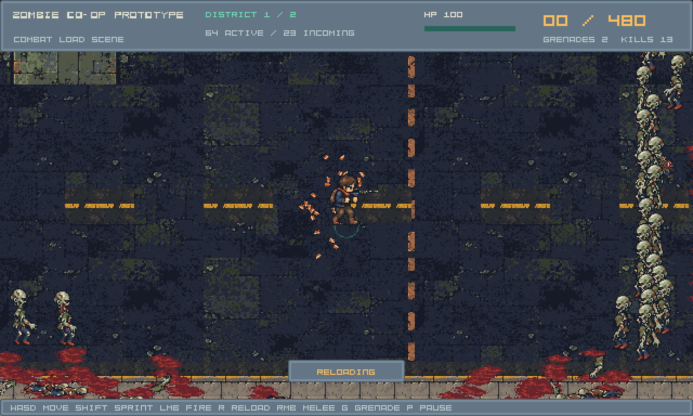

CURRENT visual gate: not accepted as a finished urban map. Patch repairs are integrated; place identity, unique frontage, ground noise and intentional edge composition remain unresolved. AI review scores are limited reviewer judgments, not a human playtest.
Play this candidate · Design return and questions · Two composition briefs · Independent visual review · Technical snapshot



This is the OLD map. Cut curb islands and rectangular road patches were removed from the current candidate above.


16 asphalt variants and16 transparent details are available; asset count does not resolve composition or place identity.
Source, executable and packaged resource hashes · Existing artwork packet